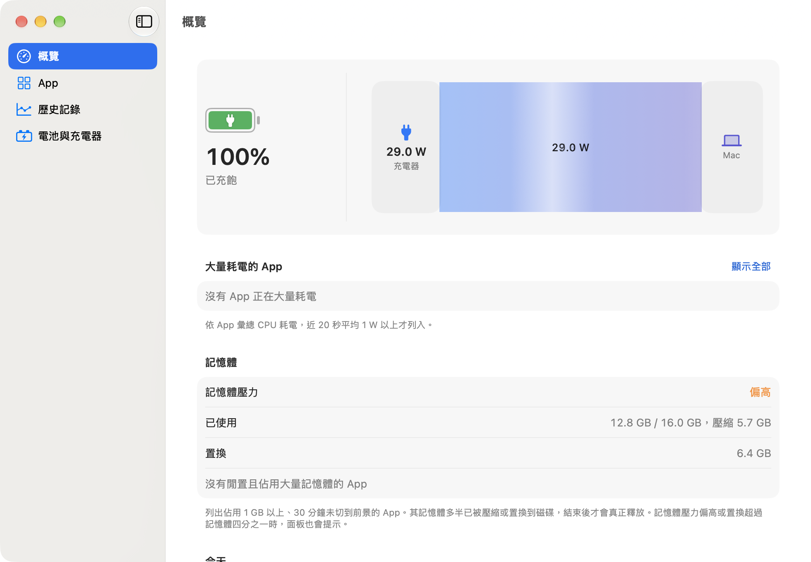
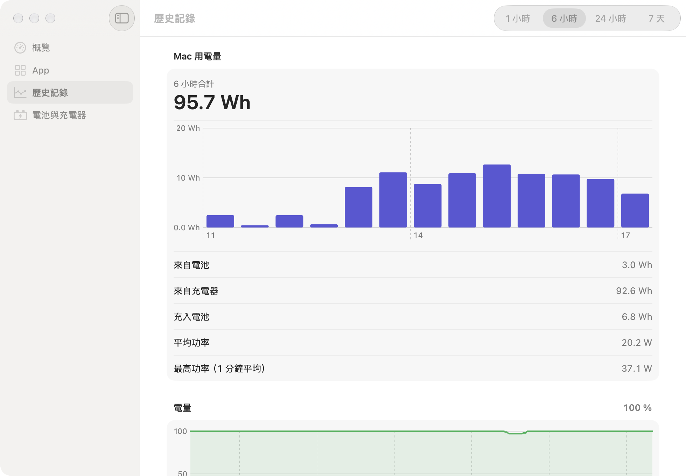

開源的 MacBook 功率與能耗監視器
電從哪來，用到了哪。
充電器、電池、Mac，每 2 秒更新，就在選單列。
開源的 MacBook 功率與能耗監視器
充電器、電池、Mac，每 2 秒更新，就在選單列。

Rill 是免費開源的 MacBook 選單列 App。它即時顯示充電器送進多少瓦、Mac 用掉多少瓦、電池充入或放出多少瓦。它列出最耗電的 App，關注記憶體壓力，並保留 7 天紀錄。它只讀取 macOS 本來就提供的資料，不需特殊權限，只在你檢查更新時連網。
不用開「活動監視器」，也不用猜。
接上電源時顯示充電器輸入，使用電池時顯示放電功率。
充電器、電池與 Mac 之間如何分配電力，帶狀寬度就是瓦數。
依 App 統計能耗、CPU 與記憶體，標出沒有回應的 App 並可直接結束。
記憶體壓力與置換一目了然。記憶體不足時，列出閒置卻佔用大量記憶體的 App。
每天用了多少電，以及功率、電量與電池溫度的變化曲線。
健康度、循環次數、充電器額定功率、協商電壓，以及支援的 USB-C PD 檔位。
從 1 小時到 7 天，按時段彙總用電量，滑過即可查看每一段。

在「終端機」執行一行指令。腳本會驗證簽章，再把 Rill 放進「應用程式」。
curl -fsSL https://raw.githubusercontent.com/chengffei/rill/main/install.sh | bash或下載磁碟映像檔手動安裝：
打開磁碟映像檔，把 Rill 拖到「應用程式」檔案夾。
按兩下 Rill。macOS 提示無法驗證開發者時，按「完成」。
在「系統設定 › 隱私權與安全性」捲到底部，按「強制打開」。
需要 macOS 26 或以上、配備電池的 Apple 晶片 Mac。若沒看到圖像，可能被選單列管理工具隱藏了。
安裝與使用 Rill 的常見問題。
安裝 Rill。選單列直接顯示即時瓦數，面板再拆分為充電器輸入、電池充放電與 Mac 本身的用電，每 2 秒更新。
不需要。它讀取 macOS 開放給所有 App 的功率感測器與電池資料，以及你自己行程的能耗。
不能。Rill 只顯示正在發生的事，不會改變 Mac 的充電方式。
它不做所謂的記憶體清理。記憶體吃緊時，它會列出佔用大量記憶體、但 30 分鐘沒用的 App，讓你決定是否結束。結束 App 才是真正釋放記憶體的方法。
是的。Rill 免費，並以 GPL-3.0 授權開源。
Rill 未經 Apple 公證。用「終端機」指令安裝就不會出現警告；或先打開一次並關閉警告，再到「系統設定 › 隱私權與安全性」按「強制打開」。
不會。紀錄只存在你的 Mac 上，保留 30 天。只有在你選擇「檢查更新」時，Rill 才會連網。